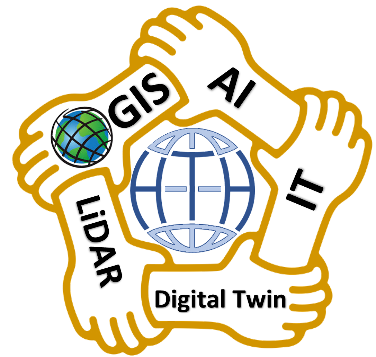

آفاق التعاون بين شركتي دار التقنية الحديثة Hi-Tech House وشركة SilkLink
Geospatial Services for Telecom
آفاق الشراكة وسياق التعاون
1-1- مجالات التعاون الرئيسية
فرق العمل والرقمنة
تشكيل فرق عمل متخصصة في أعمال الرقمنة، والتصحيح وتجهيز البيانات وبعض التحليلات
المرئيات والصور الفضائية
تأمين ومعالجة الصور الفضائية اللازمة للمشروع
معالجة وتصحيح المخططات
حل مشاكل المخططات وتصحيحها
التشريعات والتراخيص
تقديم الخبرة في مجالات الترخيص والسلامة العامة والتشريعات
الاستشعار عن بعد والصور الفضائية
2-2- أهم المنتجات من الصور الفضائية المتاحة
دليل الأقمار الصناعية المتوفرة ودقتها ومجالات الاستخدام
| المنتج (القمر الصناعي) | الدقة | الأفضل لـ / الاستخدام الأمثل |
|---|---|---|
| WorldView-3 | 30 سم | استخراج المباني والأبراج والعوائق بدقة متناهية |
| WorldView Legion | 30 سم | الحصول على صور حديثة جداً وتكرار تصوير مرتفع للموقع |
| Pléiades Neo | 30 سم | تخطيط المدن الكبيرة والنمذجة الحضرية ثلاثية الأبعاد |
| Pléiades | 50 سم | مشاريع نظم المعلومات الجغرافية (GIS) عالية الجودة |
| SkySat | 50 سم | المراقبة الزمنية المجدولة للمشاريع الهندسية ومراحل البناء |
| KOMPSAT-3A | 40-55 سم | خيار اقتصادي جيد وعملي |
| GeoEye-1 | 41 سم | الاستفادة من أرشيف صور ممتاز لبعض المناطق المتوفرة مسبقاً |
2-3- خيارات الصور الفضائية للمشروع
الخيارات المكانية المطروحة لتغطية المشروع
| الخيار | الأقمار والمنظومة | الدقة | الملاحظات والقيود |
|---|---|---|---|
| الخيار الصيني | أقمار SuperView Neo China Siwei | 30 سم (وتشير التقارير الحديثة إلى توفر إصدارات تصل إلى 25 سم) | تتميز بعدم خضوعها للقيود الأمريكية المعتادة وسهولة التوريد لمنطقة الشرق الأوسط. |
| الخيار الأوروبي | أقمار Pléiades Neo (Airbus Intelligence) | دقة 30 سم تقريباً | جودة هندسية ممتازة جداً للمدن وشبكات الاتصالات. |
| الخيار الهندي | Cartosat-3 | تصل دقته إلى أقل من 50 سم | شراء البيانات التجارية مباشرة من الأقمار الهندية أقل انتشاراً عالمياً من Maxar أو Airbus أو Siwei، وغالباً يتم عبر موزعين أو جهات حكومية وتجارية متخصصة. |
| الخيار الروسي | Resurs-P Kanopus-V |

البيانات المكانية والمشاريع السابقة لدار التقنية

لمحة عن التشريعات المتعلقة بالترخيص
4-3- تصنيف الطرق العامة وفق وظيفتها والجهات المسؤولة عنها.
القانون رقم 26 لعام 2006: تصنيف الطرق العامة وفق وظيفتها والجهات المسؤولة عنها
| تصنيف الطريق الرئيسي | النوع الفرعي / الفئة | التعريف والوصف الفني |
|---|---|---|
| طرق مركزية | دولي | تربط القطر ببلدان الجوار، وتصل بين مراكز المحافظات والمنافذ الحدودية. |
| رئيسي | تصل بين مراكز المحافظات والمدن الكبرى والمناطق الحيوية. | |
| تخديم | طرق خدمية جانية مرافقة للمحاور الأساسية لتسيير الحركة المحلية. | |
| طرق محلية | فئة أولى | تصل بين مراكز المحافظات بمراكز المدن والمناطق التابعة لها. |
| فئة ثانية | تصل بين مراكز المدن بالمناطق والنواحي والقرى. | |
| طرق الزراعة والري | زراعية / ري | الطرق المزفتة أو الترابية التي تخدم الأراضي الزراعية والمنشآت المائية. |
| طرق سياحية | سياحية | تخدم المناطق السياحية والمواقع الأثرية. |
تحديد جهة الاختصاص والمسؤولية الإدارية
| نوع الطريق | جهة الاختصاص والمسؤولية الإدارية | الوزارة / الجهة الحكومية المعنية |
|---|---|---|
| الطرق المركزية | وزارة النقل | المؤسسة العامة للمواصلات الطرقية |
| الطرق المحلية | المحافظة | وزارة الإدارة المحلية والبيئة (مجالس المدن والبلديات) |
المرجعيات المكانية وتحليل الشبكات
6-1- القيمة المضافة لمشروع Silklink
6-2- أدوات ومنصات إدارة شبكات الاتصالات (ESRI)
نموذج الشبكة Utility Network
نموذج الشبكة (Utility Network) هو الحل الأمثل لإدارة شبكة الألياف المعقدة، حيث يوفر التتبع، وتحليل التأثير، ونمذجة الأصول حتى مستوى الليف الفردي.
إدارة بيانات الاتصالات
حل إدارة بيانات الاتصالات (Communications Data Management): مناسب كحل سريع للنشر أو كطبقة أولية لإدارة الأصول وعرض التقارير.
أدوات متخصصة للاتصالات
الأدوات المتخصصة: تقدم وظائف محددة للاتصالات مثل إدارة الدوائر والمجموعات، وهي أدوات لا غنى عنها لإدارة الخدمات Service Inventory) )وتصميم الشبكة Network Design))
منصة تكاملية ESRI
هذه الأدوات، مجتمعة، تجعل Hi-Tech House/ESRI منصة أساسية لتحقيق متطلبات النظام RFI)، خاصة في جوانب إدارة الأصول المادية Physical Inventory))، وتصميم الشبكة GIS & OSP/ISP Engineering))، وإدارة الخدمات Logical & Service Inventory).)